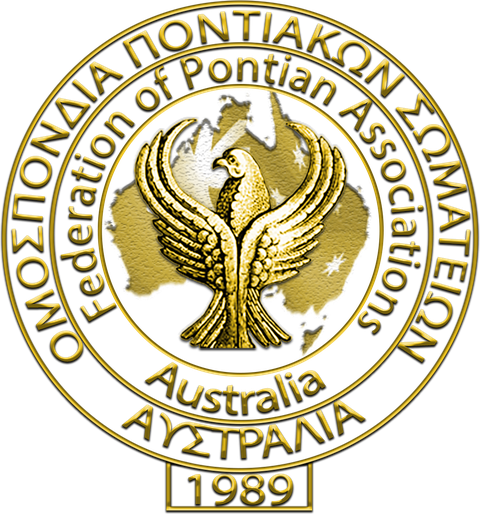

About the FederationΗ Ομοσπονδία
The national voice of Pontian Hellenism in Australia since 1989.Η εθνική φωνή του Ποντιακού Ελληνισμού στην Αυστραλία από το 1989.
Our storyΗ ιστορία μας
Founded in 1989, the Federation of Pontian Associations of Australia unites the Pontian Greek associations of New South Wales, Victoria, South Australia, Western Australia and the ACT. Together we keep alive the culture of Pontos, the Black Sea homeland of our ancestors, and honour the memory of the 353,000 Pontian Greeks who perished in the Genocide of 1916–1923.Η Ομοσπονδία Ποντιακών Σωματείων Αυστραλίας ιδρύθηκε το 1989 και ενώνει τα ποντιακά σωματεία της Νέας Νότιας Ουαλίας, της Βικτώριας, της Νότιας Αυστραλίας, της Δυτικής Αυστραλίας και της Επικράτειας Πρωτεύουσας. Μαζί κρατάμε ζωντανό τον πολιτισμό του Πόντου, της πατρογονικής μας γης στον Εύξεινο Πόντο, και τιμούμε τη μνήμη των 353.000 Ποντίων που χάθηκαν στη Γενοκτονία του 1916–1923.
Each year the Federation brings the community together at Synapantema, holds its Annual General Meeting in a different state, and advocates for the recognition of the Genocides of the Hellenes, Armenians and Assyrians.Κάθε χρόνο η Ομοσπονδία συγκεντρώνει την ομογένεια στο Συναπάντημα, πραγματοποιεί τη Γενική της Συνέλευση σε διαφορετική πολιτεία και αγωνίζεται για την αναγνώριση των Γενοκτονιών των Ελλήνων, των Αρμενίων και των Ασσυρίων.

Our missionΗ αποστολή μας
UniteΕνότητα
Bring Pontian associations across Australia together under one national body.Ενώνουμε τα ποντιακά σωματεία της Αυστραλίας κάτω από ένα εθνικό όργανο.
PreserveΔιατήρηση
Protect the dialect, music, dance and Orthodox traditions of Pontos.Διαφυλάσσουμε τη διάλεκτο, τη μουσική, τους χορούς και τις ορθόδοξες παραδόσεις του Πόντου.
RememberΜνήμη
Seek justice and recognition for the Genocide of the Pontian Greeks.Διεκδικούμε δικαίωση και αναγνώριση για τη Γενοκτονία των Ελλήνων του Πόντου.
Executive Committee 2025–2027Διοικητικό Συμβούλιο 2025–2027
Draft: names taken from press reports of the August 2025 AGM. Please confirm before publishing.Πρόχειρο: τα ονόματα προέρχονται από δημοσιεύματα για τη Γενική Συνέλευση του Αυγούστου 2025. Παρακαλούμε επιβεβαιώστε πριν από τη δημοσίευση.